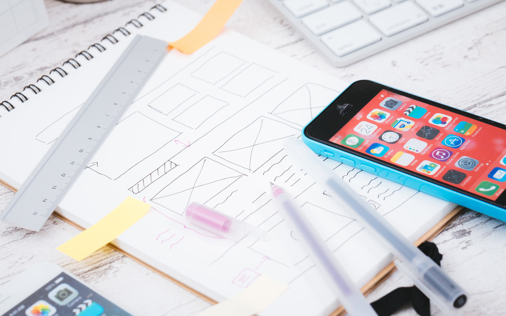
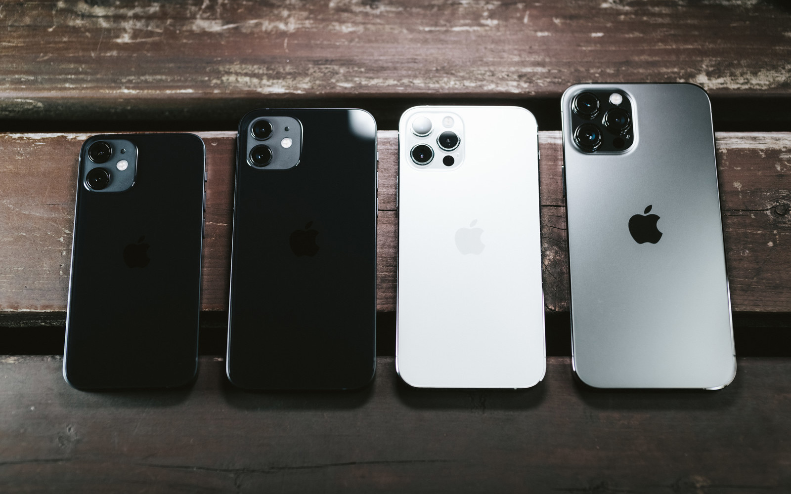
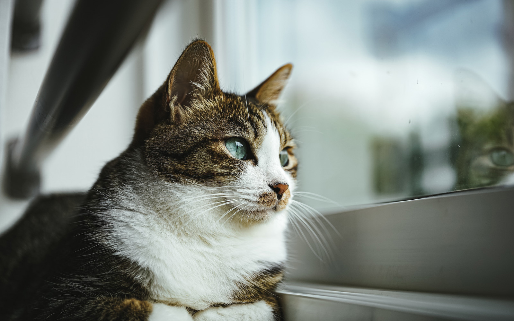

Main Visual
quocca
About
このページは、レスポンシブの挙動やサイトを構成するパーツの仕様を決定するために作られたデモサイトです。PCで、ブラウザの幅を変えてみて挙動を確認・共有するために作りました。下の設定を変更すると、このページの仕様が動的に変更されます。
Settings
ヘッダ
メインビジュアルの高さ
スマートフォン
(〜750px)
タブレット
(751px〜1040px)
※ タブレット用のレイアウトを用意するケースが多数かと思いますが、このデモには含めていません。
PC
(1041px〜)
Features
このセクションはレイアウト確認用です。PC版では3カラムですが、SP版では1カラムに変更されます。画像とテキストの量によってもバランスは変わるので、よく考えて仕様を決めましょう。特に運用中に文章量が大きく変わるページなどでは、デザインデータだけではイメージしづらいことがあります。このテキストは水増しです。
-

デザインデータだけでは伝わらないことがあります。様々な環境に対応したデザインを心がけましょう。
-

レスポンシブWebデザインは、端末によって表示が変わることを考慮する必要があります。
-

動物の動画を視聴することで、ストレスや不安の軽減につながる可能性があるという研究結果があります。
Credit
このページで使われている画像は、フリー写真素材ぱくたそ様の素材を利用しています。